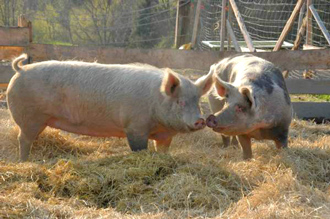
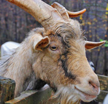

Wir haben hier einige Tiergeschichten ausgesucht, die das Herz berühren. Denn wenn man es zulässt, berühren Tiere immer unser Herz. Sie leben, sie lieben, sie leiden und suchen Schutz wie wir auch. Und wir, an der Spitze der Evolution, sind in der Lage, diesen Schutz zu bieten. Zum Glück haben wir immer die Wahl, Stärke zu zeigen, indem wir schwächere Lebewesen beschützen. Und Tiere sind es wert, denn: Tiere sind wundervolle Lebewesen!
Das Tamworth-Duo:
Es war im Jahre 1998, als zwei clevere Schweine in Großbritannien es schafften, von einem Lastwagen, der sie zum Schlachthof befördern sollte, zu fliehen. Die beiden gewieften Freunde kämpften wahrhaft tapfer um ihr Leben. Sie gruben sich einen Gang unter einem Zaun hindurch, schwammen durch den Fluss Avon und bahnten sich einen Weg durch das Dickicht. Eine ganze Woche lange waren sie erfolgreich auf der Flucht. Sie durchsuchten Gärten und Müllcontainer nach Gemüse und Essbarem. Ihr Geschick und ihr eiserner Wille bei der Flucht brachte den zwei Ausreißern soviel öffentliche Sympathie ein, dass sie fortan Celebrity-Status genossen. Sie bekamen Namen, Butch und Sundance und wurden bekannt unter dem Namen das „Tamworth-Duo“. Mittlerweile gibt es mehrere Bücher und ein Film über die beiden. Sogar der Schlachter bekam Respekt vor ihnen: „In diesem Geschäft kann man sich zwar keine Sentimentalität erlauben, aber ich wünsche ihnen viel Glück. Ich denke, sie waren klüger, als wir. Als sie mich erspähten, machten sie sich auf der Stelle davon, so schnell die Beine sie trugen.“
Aufgrund dieses Vorfalls wurde einigen Leuten zum ersten Mal bewusst, dass Schweine kluge und leidensfähige Tiere sind die viel Herz und einen eisernen Lebenswillen haben. Es gab viele Angebote, das Duo für den Rest seines Lebens an einem sicheren Ort unterzubringen. So kamen die Beiden auf einem Gnadenhof unter, wo sie zwölf Jahre lange, bis zum natürlich Tod von Butch, jeden Tag ihres Lebens gemeinsam verbrachten.
 (Aus der engl. Zeitschrift Daily Mail und dem Buch „Wovon Schafe träumen“ von Jeffrey Masson)
Das blinde Kälbchen und der zärtliche Schafsbock
Der Autor Jeffrey Masson besuchte auf seine Reise durch den Mittleren Westen der Vereinigten Staaten Mary Hurt. Durch sie erfuhr er, wie auch Schafe zu anderen Tieren enge Bindungen aufbauen.
Mary Hurt hatte eine Kuh namens Whisper (Flüstern), denn wenn diese muhte, klang es wie flüstern. Whisper war blind zur Welt gekommen. Als der Nachbar, auf dessen Feld sie geboren wurde, sie einfach liegen lassen wollte, damit sie alleine stirbt, trug Corey, Mary Hurts zwanzigjähriger Sohn sie fast einen Kilometer weit durch den Regen zum eigenen Hof.

Zur allgemeinen Verblüffung fand „Rammo“ ein zweijähriger männlicher Schafsbock Gefallen an ihr. Schafsböcke sind oft Einzelgänger und Rammo war ein besonders „harter Bursche“. Es schien äußerst unwahrscheinlich, dass er sich mit dem blinden Mitglied einer anderen Tierart überhaupt befassen würde. Doch genau das tat er. Mary erzählte, er hatte irgendwie das Gefühl, sie beschützen zu müssen. Den ganzen Tag über graste er neben ihr, führte sie über das Feld und achtete darauf, dass sie nicht an Zäune oder Pfähle stieß. Whisper war eine extrem zärtliche Kuh, die es liebte bei Kindern zu stehen, wenn sie Volleyball spielten, und oft versuchte sie am Spiel teilzunehmen. Whisper wurde vier Jahre alt und starb 1996 an einer Virusinfektion. Rammo trauerte lange um sie, verharrte neben ihrem toten Körper und stieß unablässig Klagelaute aus. (Aus dem Buch „Wovon Schafe träumen“ von Jeffrey Masson)
Schildkröte füttert Fische
In einem Frühjahr besuchte Frau Lenzinger-Conradi ein Schmetterlingshaus auf der Insel Mainau. In einem romantisch angelegten kleinen Teich beobachtete sie eine Schildkröte, die etwas kleiner war, als die anderen. Immer wieder kletterte sie über ein Holzfloß, das am leicht ansteigenden Ufer angelehnt war. Dort tapste sie hin und her und kroch dann wieder auf das Floß, wo bei ihrem Anblick immer ein ganzer Schwarm kleiner Fische angeschwommen kam. Frau Lenzinger-Conradi konnte sich dieses Verhalten nicht erklären, bis sie feststellte, dass die Schildkröte am Ufer ausgestreute Brotkrümel in ihrem Mäulchen mitnahm und tatsächlich die kleinen Fische fütterte. Noch sechs Mal wiederholte die Schildkröte diesen Vorgang, bis alle Krümelchen weg waren. (Aus: Tierschutz aktuell 4/2006)
"The birth of the spoonrevolution"
All diese wahren Geschichten von besonderen Tieren zeigen, dass alle Lebewesen nach einem suchen: Nach Liebe. Egal, ob diese Liebe von einem Menschen oder einem Tier kommt, sie wirkt immer Wunder und heilt unsere „seelischen Wunden“. Es braucht nicht viel, um die Welt ein Stückchen zum Besseren zu wenden. Nur ein bisschen Verständnis und ein offenes Herz.
Wer eine Geschichte über ein besonderes Tier erzählen kann, die er selbst erlebt hat, ist herzlich dazu eingeladen, uns seine Geschichte zu schicken. Wir würden uns sehr darüber freuen und stellen sie gerne auf unsere Webpage oder auf unsere Facebookseite (email: office@pro-ahimsa.at).